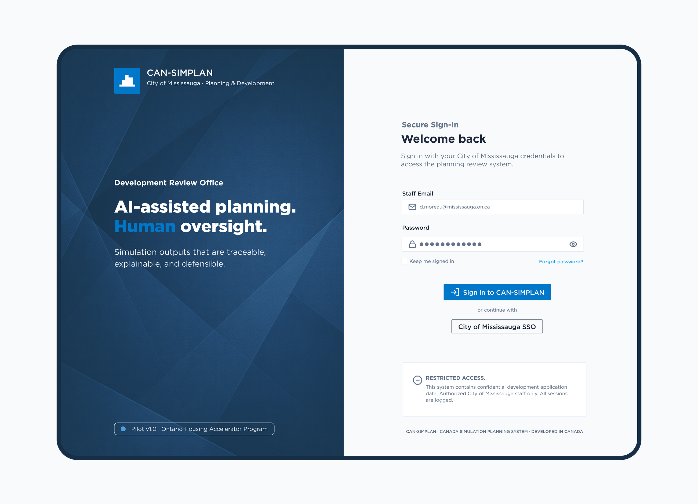
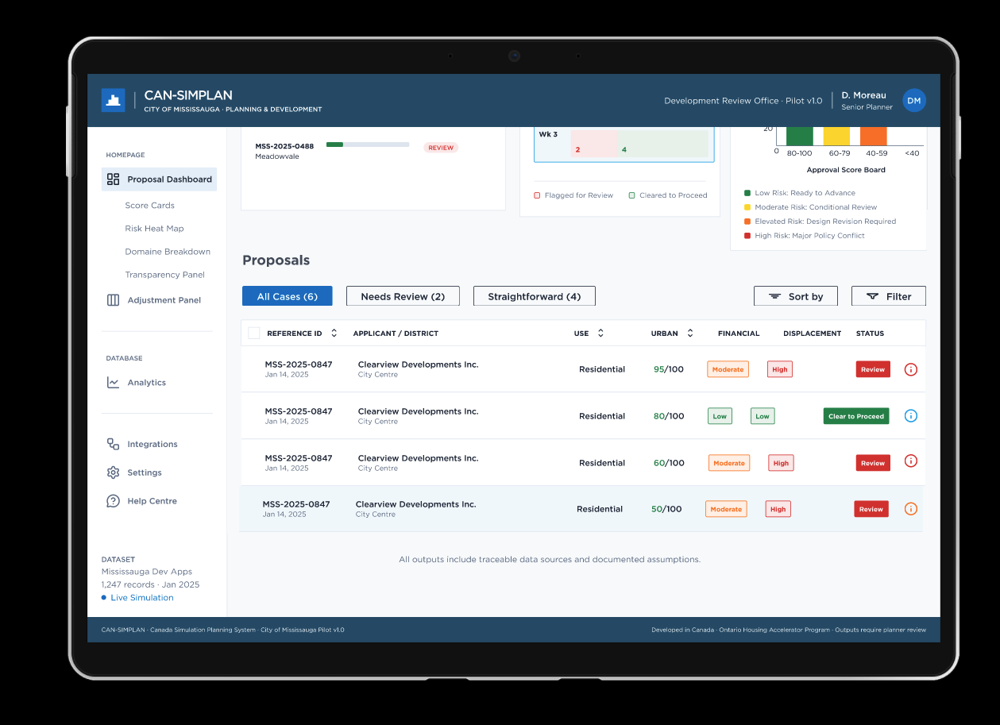
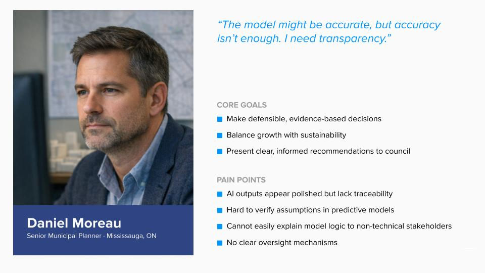
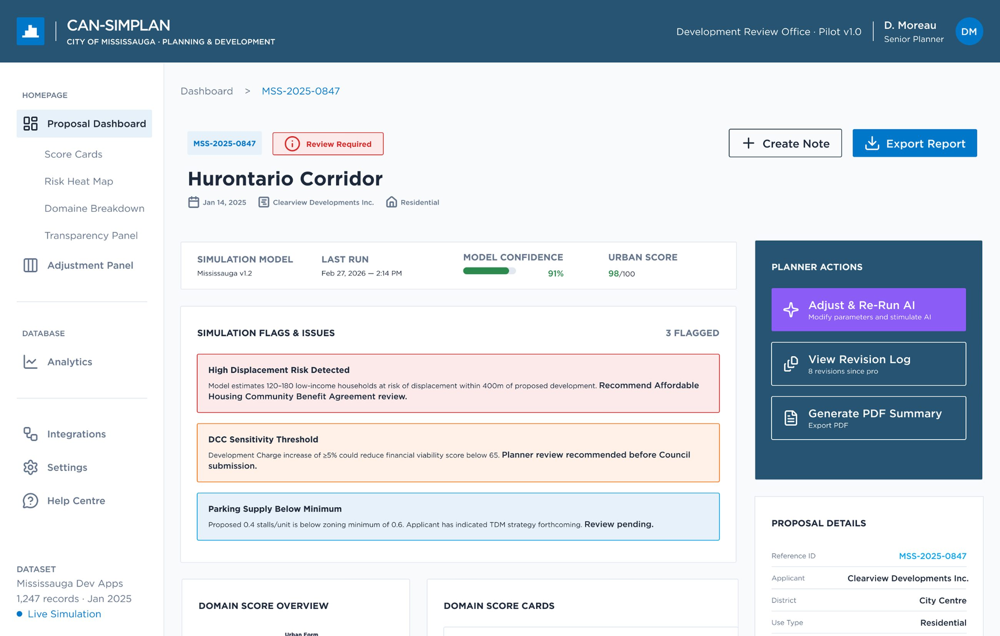
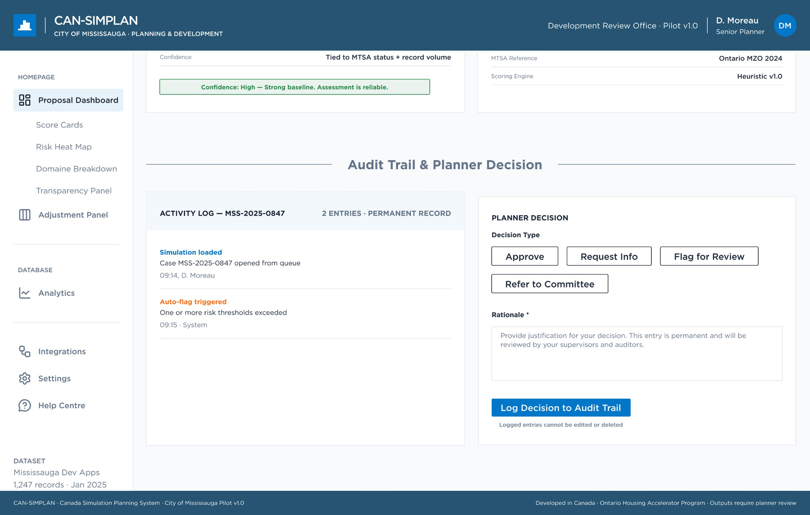

Planners are accountable. The AI isn't.
Municipal planners make consequential decisions — zoning approvals, housing density, displacement risk — increasingly informed by AI outputs they can't fully interrogate. When those decisions fail politically or legally, the model doesn't answer for it. The planner does.
Most tools are designed for speed. None were designed for defensibility.
"The model might be accurate, but accuracy isn't enough. I need transparency."
The Design Challenge
How might we structure AI outputs so planners can defend every decision under legal, political, and public scrutiny?
Sole UX designer on a cross-functional team.
I worked closely with three software engineers and a data scientist to translate simulation model logic into interfaces planners could read, interrogate, and act on.
- Persona development and problem framing
- Information architecture and interaction design
- Transparency, flagging, and audit trail patterns
- High-fidelity interface design (Figma)
- Stakeholder presentation design and content

Planners don't need faster models. They need outputs they can defend.
This reframed the entire project. The design question was no longer about efficiency — it was about accountability. Every interface decision followed from that shift.

CAN-SIMPLAN is not a decision-maker. It's a structured oversight layer.
- Runs multi-domain simulation scoring
- Surfaces confidence levels and flagged risks
- Requires planner engagement before approval
- Generates council-ready, audit-backed outputs
Core principle: defensible over fast


Blocking flags
Flags require written rationale before the workflow proceeds. In a governance context, the interface has to enforce engagement, not rely on professional diligence.
Visible confidence
Model confidence, version, and last-run timestamp surface in the proposal header, not buried in a technical panel. Planners need to know how much to trust an output before they engage with it. Surfacing uncertainty is not a weakness — it's honesty.
Plain-language translation
Every technical flag includes a plain-language explanation written for planners, not data scientists. The planner's job is judgment. The interface's job is translation. The flag descriptions do the interpretation work so cognitive load stays where it belongs.
Embedded audit trail
All overrides are logged, timestamped, and immutable within the proposal view, not in a separate admin panel. Placing the audit trail inside the primary workflow signals that documentation is part of the job, not a bureaucratic add-on. If it's buried, accountability is secondary.

Designing for governance changes the constraints entirely.
Usability is not the primary constraint here — accountability is. That distinction reshaped how I thought about friction, structure, and trust.
- Friction can be protective. Blocking flags aren't bad UX — they're the right UX for a governance context.
- Structure builds trust. When a system enforces documentation, it signals to every stakeholder that the process is serious.
- Auditability is a UX problem. If the audit trail is buried or hard to read, it doesn't function as accountability — it's just data.
Working cross-functionally also pushed me to get comfortable at the boundary between technical model logic and human decision workflows, translating in both directions.
What if accountability were a system feature?
That question outlasts this project. Most AI tools treat accountability as something bolted on after the fact — a compliance log, a disclaimer, a human sign-off screen that exists to satisfy legal rather than to build trust. CAN-SIMPLAN treats it as a design constraint from the first wireframe: the audit trail isn't a record of what the interface allowed to happen elsewhere, it's built into the same view where the decision gets made. If more AI-assisted tools — not just civic ones, but hiring platforms, lending systems, clinical decision support — treated the requirement to explain a decision as a feature to design for rather than a report to generate afterward, the tools themselves would look different. Fewer dashboards optimized purely for throughput; more interfaces that slow a person down at exactly the moment their judgment matters most.
What I'd do differently
Four days is enough to prove a reframe, not enough to stress-test it. If I had more time, I'd want evidence that the blocking flags actually change planner behaviour rather than just adding a click they learn to move past quickly — that's a real risk with any interface that relies on friction to enforce rigor. I'd also want to sit with a planner while they used the transparency panel on a proposal they disagreed with, not just approved. The best test of a defensibility tool isn't whether it explains an easy decision; it's whether it holds up when someone pushes back on a hard one.
Given more time and access to users, I'd prioritise:
- Usability testing with senior planners on the flag engagement and override flows
- WCAG 2.1 AA accessibility audit — high-stakes civic tools must be universally accessible
- Mobile workflow for field visits and on-site proposal review
- Design of the post-approval feedback loop, where real outcomes recalibrate the model over time